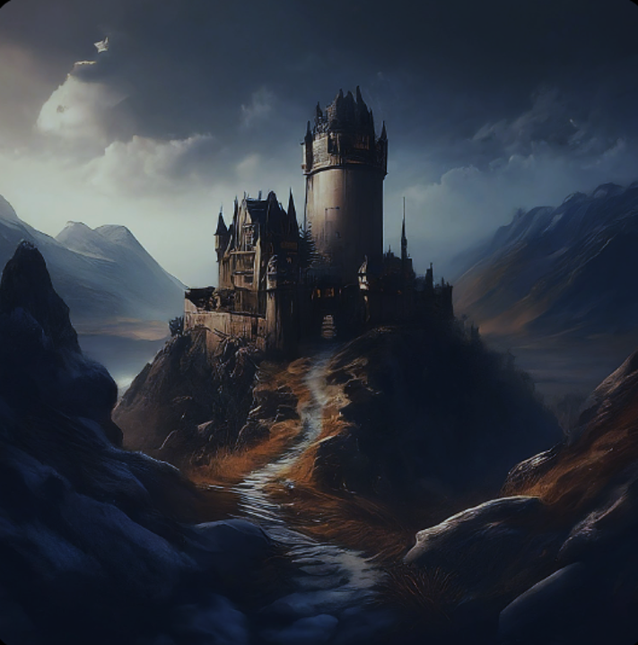

The Silent Forest

The Old Dark Fortress

Under the cloak of darkness, Reyna and Asher crouched amidst the dense foliage at the edge of the forest, their breaths coming in shallow gasps as they surveyed the imposing silhouette of Vex's fortress looming in the distance. The fortress stood as a bastion of darkness, its towering walls bristling with dark energy, a testament to the power and cruelty of the crocodile king who dwelled within.
"We cannot hope to defeat Vex in a direct confrontation," Reyna murmured, her voice barely more than a whisper as she turned to face Asher, her emerald eyes filled with determination. "He is too powerful, too cunning. We must find another way to stop him."
Asher nodded in agreement, his gaze fixed on the fortress with grim resolve. "But what other option do we have?" he asked, his voice low with uncertainty.
Reyna's mind raced with possibilities, her thoughts darting from one idea to the next as she searched for a solution to their dilemma. And then, suddenly, it came to her in a flash of inspiration, a daring plan born of desperation and necessity.
"We must strike at the heart of Vex's power," Reyna said, her voice filled with determination. "We must infiltrate his fortress, where he keeps the source of his dark magic hidden away from prying eyes."
Asher's eyes widened in surprise, his gaze locking with Reyna's in silent understanding. "But how will we gain entry?" he asked, his voice low with uncertainty.
Reyna's lips curved into a wry smile, her eyes sparkling with mischief. "With a little help from an old friend," she replied cryptically, her mind already racing with the details of their daring plan.
With a renewed sense of purpose burning bright within their hearts, Reyna and Asher set out once more into the moonlit night, their steps guided by the promise of victory and the hope of a brighter tomorrow.
Their journey was fraught with peril and danger, each step bringing them closer to the heart of Vex's fortress and the final showdown that awaited them. They navigated treacherous terrain, dodged patrols of Vex's minions, and braved traps set to ensnare unwary intruders, their determination unshaken by the obstacles that lay in their path.
And then, at long last, they stood before the towering gates of Vex's fortress, their hearts pounding with anticipation as they prepared to put their daring plan into action. With a silent nod of understanding, Reyna and Asher steeled themselves for the challenges that lay ahead, their resolve unyielding in the face of the darkness that threatened to consume them.
For they knew that the fate of Verdantia hung in the balance, that their actions would determine the course of destiny for generations to come. And though the road ahead was fraught with danger and uncertainty, they faced it with courage and conviction, knowing that together, they were capable of achieving the impossible.
Under the cloak of darkness, Reyna and Asher approached the towering walls of Vex's fortress, their hearts pounding with anticipation as they prepared to put their daring plan into action. With stealth and precision born of desperation, they slipped past the guards stationed at the gates, their movements swift and silent as shadows in the night.
As they made their way deeper into the heart of the fortress, they encountered obstacle after obstacle, each one testing their resolve and pushing them to their limits. But Reyna's cunning and Asher's strength carried them through, their bond growing stronger with each passing moment as they fought side by side against the forces of darkness.
And then, at long last, they reached the inner sanctum of the fortress, where Vex lay in wait, his eyes gleaming with malice as he prepared to unleash his dark magic upon the realm. With a grim determination, Reyna and Asher faced off against the crocodile king, knowing that their moment of reckoning had come.
But Vex was a formidable foe, his dark magic crackling with power as he launched a barrage of attacks against the courageous pair. Despite their skill and determination, Reyna and Asher found themselves hard-pressed to keep pace with Vex's relentless assault, their strength waning with each passing moment.
And then, in a cruel twist of fate, tragedy struck. With a swift and deadly strike, Vex delivered a fatal blow to Asher, his dark claws piercing the noble man tiger's heart with merciless precision. With a strangled cry, Asher fell to the ground, his lifeblood staining the cold stone floor of the fortress.
Reyna's heart shattered into a million pieces as she watched her beloved Asher fall, her screams of anguish echoing through the halls of the fortress. In that moment of despair, she felt as though her world had come crashing down around her, the weight of her grief threatening to crush her beneath its crushing embrace.
But even as tears streamed down her fur, Reyna knew that she could not afford to give in to despair. With a steely resolve born of desperation and determination, she turned her gaze towards Vex, her eyes burning with a fiery determination as she prepared to avenge Asher's death.
With a primal roar, Reyna launched herself at Vex, her claws flashing in the dim light as she unleashed her fury upon the crocodile king. And though her heart was heavy with sorrow, she fought with all her might, knowing that she could not rest until justice had been served.
And then, in a blinding flash of light and fury, Reyna delivered the final blow, her claws sinking deep into Vex's chest as she unleashed a primal roar that echoed through the halls of the fortress. With a strangled cry, Vex collapsed to the ground, his dark magic dissipating into the ether as his reign of terror came to an end.
The Silent Forest
The Old Dark Fortress